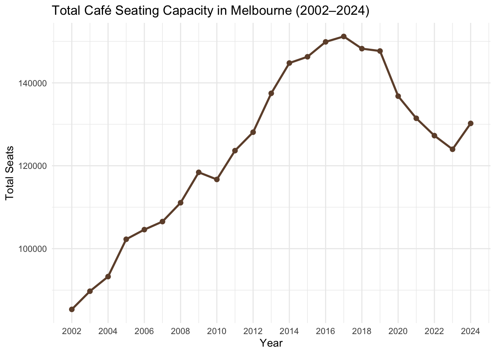
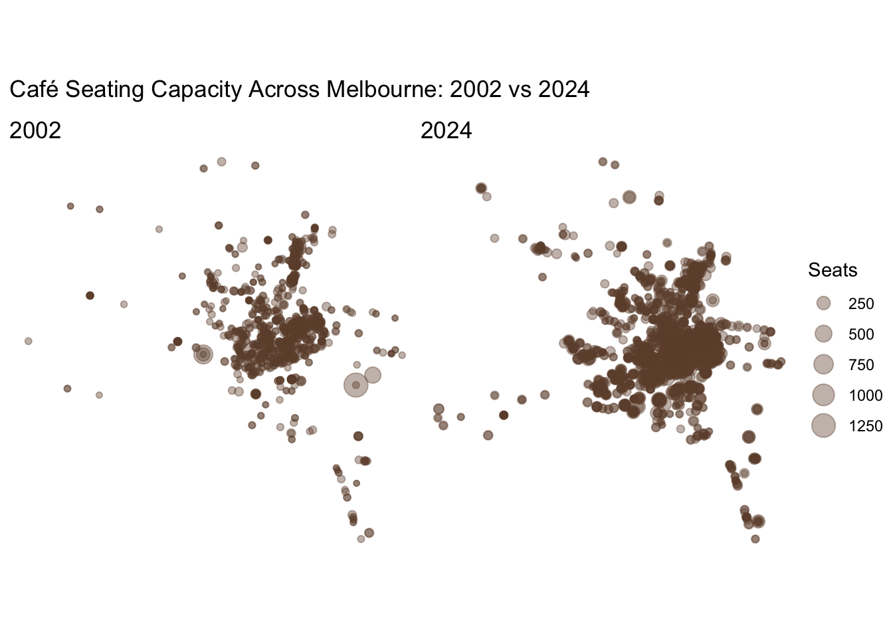
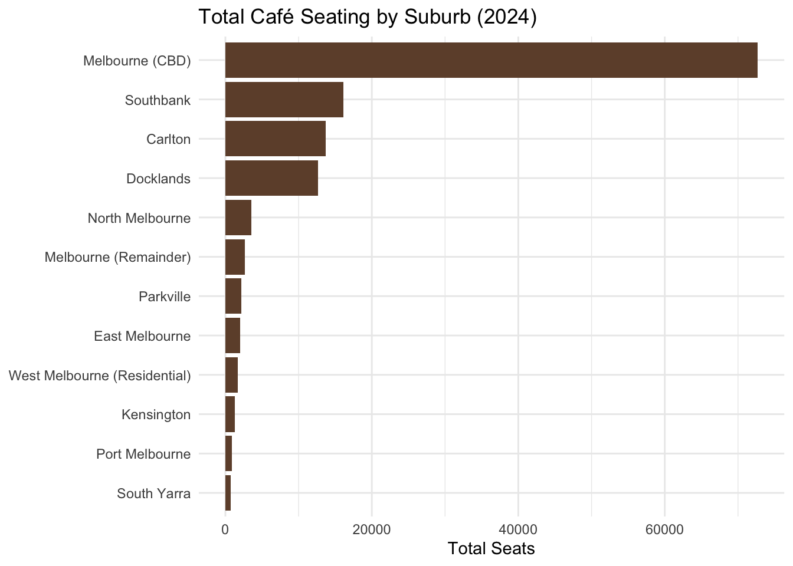
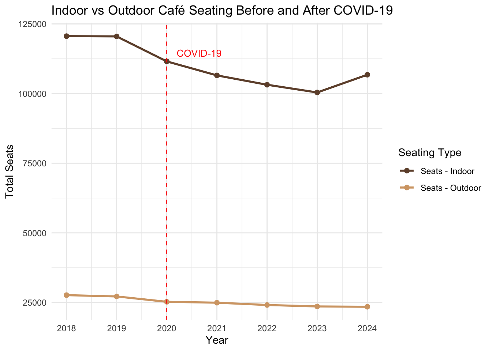
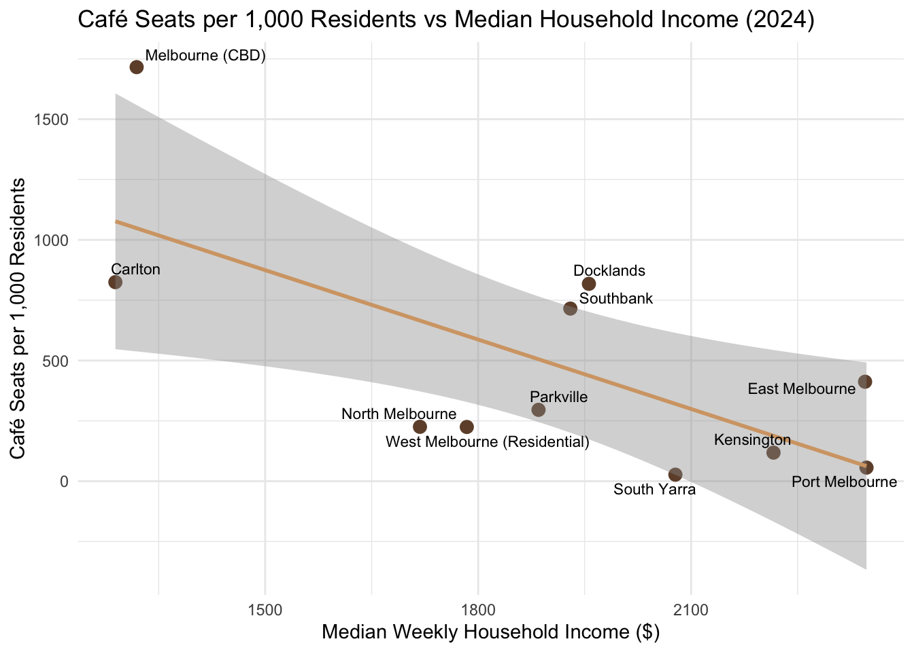

Show code
library(tidyverse)
library(here)
library(sf)
library(readxl)
library(ggrepel)
library(patchwork)What is the question you are aiming to answer in your blog post? (You may have multiple sub-questions.) Share why you chose this question.
How has Melbourne’s café and dining scene evolved over two decades (2002–2024), and is seating capacity distributed equitably across suburbs?
This question is explored through three sub-questions:
I chose this question because I come from Bangalore - also a coffee city. South Indian filter coffee is famous among Bangaloreans, and in recent years Bangalore’s café culture has expanded far beyond that signature drink, with roasters like Blue Tokai, Benki Coffee, and Hatti Kappi redefining the scene.
Moving to Melbourne, a city whose café culture is part of its global identity, I was curious whether that reputation is actually backed by data — and whether it extends equally across the city.
What data will you be using to answer that question? Explain why this data is suitable for the task. This means make clear the type of data (census, sample, experimental), data licence, data limitations and any ethical considerations, including those related to data privacy. The relevant details here will depend on the data you choose and the analysis you perform.
Dataset 1 can be downloaded from the City of Melbourne Open Data Portal at data.melbourne.vic.gov.au, searching for “Café, Restaurant and Bistro Seats.”
Dataset 1: Café, Restaurant and Bistro Seats — City of Melbourne CLUE
Datasets 2–4 are available from the ABS Census DataPacks page. Select 2021 Census, General Community Profile, Victoria, SA2. Download G01 and G02 CSV files and the ASGS metadata Excel file.
Dataset 2: ABS Census 2021 — General Community Profile (G02), Victoria, SA2
Median_tot_hhd_inc_weekly)Dataset 3: ABS Census 2021 — General Community Profile (G01), Victoria, SA2
Tot_P_P)Dataset 4: ABS 2021 Census — Geographic Descriptor File
Dataset 5: City of Melbourne — Suburb Boundary Shapefile
mccid_int (postcode), polygon geometryDescribe the steps to download your data and any steps to process your data for your analysis. Save your raw and processed data.
library(tidyverse)
library(here)
library(sf)
library(readxl)
library(ggrepel)
library(patchwork)# Load raw CLUE café data
clue_raw <- read_csv(here("data/raw/cafes-and-restaurants-with-seating-capacity.csv"))cafes <- clue_raw |>
filter(`Industry (ANZSIC4) description` == "Cafes and Restaurants")
# Save filtered data
write_csv(cafes, here("data/processed/cafes_filtered.csv"))The raw CLUE dataset contains multiple industry types. I filtered by the ANZSIC4 code “Cafes and Restaurants” only, as other categories (e.g. pubs, fast food) are outside the scope of this analysis.
suburb_2024 <- cafes |>
filter(`Census year` == 2024) |>
group_by(`CLUE small area`) |>
summarise(total_seats = sum(`Number of seats`, na.rm = TRUE),
.groups = "drop") |>
arrange(desc(total_seats))To enable an equity analysis, median household income and population data were drawn from the ABS 2021 Census. CLUE uses its own suburb naming conventions that differ from ABS SA2 names, a manual look up table is constructed to bridge the two systems, where a CLUE suburb maps to multiple ABS SA2s (e.g. Southbank spans two SA2s), a population-weighted mean income was calculated rather than a simple average.
# SA2 lookup
sa2_lookup <- read_excel(
here("data/raw/Metadata/2021Census_geog_desc_1st_2nd_3rd_release.xlsx"),
sheet = "2021_ASGS_MAIN_Structures"
) |>
filter(ASGS_Structure == "SA2") |>
select(SA2_CODE_2021 = Census_Code_2021,
SA2_NAME_2021 = Census_Name_2021)
# Income data
g02 <- read_csv(here("data/raw/2021Census_G02_VIC_SA2.csv")) |>
select(SA2_CODE_2021,
median_weekly_income = Median_tot_hhd_inc_weekly) |>
mutate(SA2_CODE_2021 = as.character(SA2_CODE_2021))
# Population data
g01 <- read_csv(here("data/raw/2021Census_G01_VIC_SA2.csv")) |>
select(SA2_CODE_2021, population = Tot_P_P) |>
mutate(SA2_CODE_2021 = as.character(SA2_CODE_2021))
# Join both to SA2 names
abs_data <- g02 |>
left_join(g01, by = "SA2_CODE_2021") |>
left_join(sa2_lookup, by = "SA2_CODE_2021") |>
select(suburb = SA2_NAME_2021, median_weekly_income, population)
# Aggregate split Southbank SA2s using population-weighted mean
southbank_weighted <- abs_data |>
filter(str_detect(suburb, "Southbank")) |>
summarise(
suburb = "Southbank",
median_weekly_income = weighted.mean(median_weekly_income, population),
population = sum(population)
)
abs_data <- abs_data |>
filter(!str_detect(suburb, "Southbank")) |>
bind_rows(southbank_weighted)
# Aggregate split CBD SA2s using population-weighted mean
cbd_weighted <- abs_data |>
filter(str_detect(suburb, "Melbourne CBD")) |>
summarise(
suburb = "Melbourne (CBD)",
median_weekly_income = weighted.mean(median_weekly_income, population),
population = sum(population)
)
abs_data <- abs_data |>
filter(!str_detect(suburb, "Melbourne CBD")) |>
bind_rows(cbd_weighted)
# Aggregate split CBD SA2s using population-weighted mean
southyarra_weighted <- abs_data |>
filter(str_detect(suburb, "South Yarra")) |>
summarise(
suburb = "South Yarra",
median_weekly_income = weighted.mean(median_weekly_income, population),
population = sum(population)
)
abs_data <- abs_data |>
filter(!str_detect(suburb, "South Yarra")) |>
bind_rows(southyarra_weighted)
# Manual suburb name mapping
name_mapping <- tribble(
~clue_name, ~abs_name,
"Melbourne (CBD)", "Melbourne (CBD)",
"Carlton", "Carlton",
"Docklands", "Docklands",
"East Melbourne", "East Melbourne",
"Kensington", "Kensington (Vic.)",
"North Melbourne", "North Melbourne",
"Parkville", "Parkville",
"Southbank", "Southbank",
"South Yarra", "South Yarra",
"Port Melbourne", "Port Melbourne",
"West Melbourne (Industrial)", "West Melbourne - Industrial",
"West Melbourne (Residential)", "West Melbourne - Residential"
)
# Build equity dataset
equity_data <- suburb_2024 |>
left_join(name_mapping, by = c("CLUE small area" = "clue_name")) |>
left_join(abs_data, by = c("abs_name" = "suburb")) |>
filter(!is.na(median_weekly_income)) |>
mutate(seats_per_1000 = (total_seats / population) * 1000)
write_csv(equity_data, here("data/processed/cafe_equity_analysis.csv"))In your submission, include comprehensive details of the data you used (e.g. read me, meta data file, a data dictionary. This may also include a sample data example if useful.)
# Data dictionary CSV
data_dict <- tibble(
Variable = c("Census year", "CLUE small area", "Trading name",
"Business address", "Industry (ANZSIC4) description",
"Seating type", "Number of seats", "Longitude", "Latitude",
"Median_tot_hhd_inc_weekly", "Tot_P_P", "SA2_CODE_2021",
"SA2_NAME_2021", "seats_per_1000"),
Dataset = c("CLUE", "CLUE", "CLUE", "CLUE", "CLUE", "CLUE", "CLUE",
"CLUE", "CLUE", "ABS G02", "ABS G01", "ABS Metadata",
"ABS Metadata", "Derived"),
Description = c("Year of annual business census (2002-2024)",
"Suburb/precinct name within City of Melbourne LGA",
"Business trading name",
"Full street address of business",
"Business industry classification",
"Indoor or outdoor seating",
"Licensed seating capacity",
"WGS84 longitude coordinate",
"WGS84 latitude coordinate",
"Median weekly household income by SA2",
"Total resident population by SA2",
"9-digit SA2 geographic code",
"SA2 suburb name",
"Cafe seats per 1000 residents"),
Type = c("Numeric", "Character", "Character", "Character", "Character",
"Character", "Numeric", "Numeric", "Numeric", "Numeric",
"Numeric", "Character", "Character", "Numeric")
)
write_csv(data_dict, here("data/data-dictionary.csv"))
# Sample data
cafes |> slice_head(n = 5) |>
write_csv(here("data/sample-clue.csv"))
equity_data |> slice_head(n = 5) |>
write_csv(here("data/sample-equity.csv"))metadata <- tibble(
Attribute = c("Source", "Structure", "Methodology", "Topic",
"Geographic coverage", "Temporal coverage",
"Licence", "Last updated", "Maintenance"),
`Dataset 1 (CLUE)` = c("City of Melbourne Open Data Portal",
"Tabular CSV",
"Annual business census",
"Food business seating capacity",
"City of Melbourne LGA",
"2002–2024",
"CC BY 4.0",
"2024",
"City of Melbourne annually"),
`Dataset 2 (ABS G02)` = c("Australian Bureau of Statistics",
"Tabular CSV",
"5-yearly population census",
"Household income",
"Victoria, SA2 level",
"2021",
"CC BY 4.0",
"2022",
"ABS every 5 years"),
`Dataset 3 (ABS G01)` = c("Australian Bureau of Statistics",
"Tabular CSV",
"5-yearly population census",
"Population counts",
"Victoria, SA2 level",
"2021",
"CC BY 4.0",
"2022",
"ABS every 5 years"),
`Dataset 4 (ASGS)` = c("Australian Bureau of Statistics",
"Excel lookup",
"Administrative geography standard",
"Geographic boundaries",
"Australia-wide",
"2021",
"CC BY 4.0",
"2022",
"ABS every 5 years"),
`Dataset 5 (Postcodes)` = c("City of Melbourne Open Data Portal",
"Shapefile",
"Administrative boundary file",
"Suburb boundaries",
"City of Melbourne LGA",
"2003–2011",
"CC BY 4.0",
"2011",
"City of Melbourne")
)
write_csv(metadata, here("data/metadata.csv"))CLUE Dataset Variables:
ABS G02 Variables:
ABS G01 Variables:
ABS Metadata Variables:
Derived Variables:
For full variable definitions see ‘data/data-dictionary.csv’. Sample records from the raw CLUE data and processed equity dataset are available in data/sample-clue.csv and data/sample-equity.csv.
Australian Bureau of Statistics. (2021). 2021 Census community profiles: General community profile (G01) [Data set]. https://www.abs.gov.au/census/find-census-data/datapacks
Australian Bureau of Statistics. (2021). 2021 Census community profiles: Selected medians and averages (G02) [Data set]. https://www.abs.gov.au/census/find-census-data/datapacks
Australian Bureau of Statistics. (2021). 2021 Australian Statistical Geography Standard (ASGS) geographic structures [Data file]. https://www.abs.gov.au/census/find-census-data/datapacks
Blue Tokai Coffee Roasters. (n.d.). About us. https://bluetokaicoffee.com/pages/about-us
City of Melbourne Open Data Team. (2015). Cafes and restaurants with seating capacity [Data set]. Melbourne Open Data Portal. https://data.melbourne.vic.gov.au/explore/dataset/cafes-and-restaurants-with-seating-capacity/information/
Hatti Kaapi Food & Beverages. (n.d.). Hatti Kaapi Food & Beverages [Company page]. LinkedIn. https://www.linkedin.com/company/hatti-kaapi-food-beverages/
I grew up in Bangalore,another city that takes its coffee seriously. When I moved to Melbourne, I heard that Melbourne is synonymous with café culture. Is that reputation backed by data?
Using two decades of business census data from the City of Melbourne, this post looks at how the café scene has grown, where it actually lives, what COVID did to it, and whether café access follows wealth.
growth_total <- cafes |>
group_by(`Census year`) |>
summarise(
n_cafes = n_distinct(paste(`Trading name`, `Business address`)),
total_seats = sum(`Number of seats`, na.rm = TRUE),
.groups = "drop"
)
# Line chart: total seats over time
ggplot(growth_total, aes(x = `Census year`, y = total_seats)) +
geom_line(colour = "#6F4E37", linewidth = 1) +
geom_point(colour = "#6F4E37", size = 2) +
scale_x_continuous(breaks = seq(2002, 2024, by = 2)) +
labs(title = "Total Café Seating Capacity in Melbourne (2002–2024)",
x = "Year", y = "Total Seats") +
theme_minimal()
growth_total |>
arrange(`Census year`) |>
knitr::kable(
col.names = c("Year", "Number of Cafés", "Total Seats"),
digits = 0
)| Year | Number of Cafés | Total Seats |
|---|---|---|
| 2002 | 886 | 85349 |
| 2003 | 914 | 89736 |
| 2004 | 944 | 93258 |
| 2005 | 1025 | 102271 |
| 2006 | 1065 | 104592 |
| 2007 | 1111 | 106533 |
| 2008 | 1169 | 111081 |
| 2009 | 1253 | 118420 |
| 2010 | 1301 | 116700 |
| 2011 | 1363 | 123649 |
| 2012 | 1428 | 128098 |
| 2013 | 1539 | 137477 |
| 2014 | 1620 | 144786 |
| 2015 | 1663 | 146297 |
| 2016 | 1725 | 149891 |
| 2017 | 1738 | 151199 |
| 2018 | 1756 | 148256 |
| 2019 | 1771 | 147688 |
| 2020 | 1649 | 136792 |
| 2021 | 1595 | 131451 |
| 2022 | 1536 | 127270 |
| 2023 | 1561 | 123977 |
| 2024 | 1645 | 130223 |
postcodes_sf <- st_read(here("data/raw/postcodes/postcodes.shp")) |>
st_transform(crs = 4326) |>
mutate(suburb_name = case_when(
mccid_int == 3000 ~ "Melbourne CBD",
mccid_int == 3053 ~ "Carlton",
mccid_int == 3008 ~ "Docklands",
mccid_int == 3002 ~ "East Melbourne",
mccid_int == 3031 ~ "Kensington",
mccid_int == 3051 ~ "North Melbourne",
mccid_int == 3052 ~ "Parkville",
mccid_int == 3006 ~ "Southbank",
mccid_int == 3141 ~ "South Yarra",
mccid_int == 3207 ~ "Port Melbourne",
mccid_int == 3003 ~ "West Melbourne",
TRUE ~ ""
))Reading layer `postcodes' from data source
`/Users/suprithamaiya/Downloads/Semester4/WCD Assignment 4/data/raw/postcodes/postcodes.shp'
using driver `ESRI Shapefile'
Simple feature collection with 17 features and 8 fields
Geometry type: POLYGON
Dimension: XY
Bounding box: xmin: 144.897 ymin: -37.85066 xmax: 144.9913 ymax: -37.77545
Geodetic CRS: WGS 84cafe_2002_sf <- cafes |>
filter(`Census year` == 2002) |>
filter(!is.na(Longitude), !is.na(Latitude)) |>
st_as_sf(coords = c("Longitude", "Latitude"), crs = 4326)
cafe_2024_sf <- cafes |>
filter(`Census year` == 2024) |>
filter(!is.na(Longitude), !is.na(Latitude)) |>
st_as_sf(coords = c("Longitude", "Latitude"), crs = 4326)
p2002 <- ggplot() +
geom_sf(data = postcodes_sf, fill = "grey95", colour = "grey70", linewidth = 0.3) +
geom_sf_text(data = postcodes_sf, aes(label = suburb_name),
size = 2, colour = "grey30") +
geom_sf(data = cafe_2002_sf, aes(size = `Number of seats`),
alpha = 0.5, colour = "#6F4E37") +
scale_size_continuous(range = c(1, 8), limits = c(0, 1300)) +
coord_sf(xlim = c(144.89, 144.99), ylim = c(-37.86, -37.77)) +
labs(title = "2002", size = "Seats") +
theme_void() +
theme(legend.position = "none",
plot.title = element_text(hjust = 0.5, face = "bold"))
p2024 <- ggplot() +
geom_sf(data = postcodes_sf, fill = "grey95", colour = "grey70", linewidth = 0.3) +
geom_sf_text(data = postcodes_sf, aes(label = suburb_name),
size = 2, colour = "grey30") +
geom_sf(data = cafe_2024_sf, aes(size = `Number of seats`),
alpha = 0.5, colour = "#6F4E37") +
scale_size_continuous(range = c(1, 8), limits = c(0, 1300)) +
coord_sf(xlim = c(144.89, 144.99), ylim = c(-37.86, -37.77)) +
labs(title = "2024", size = "Seats") +
theme_void() +
theme(plot.title = element_text(hjust = 0.5, face = "bold"))
p2002 + p2024 +
plot_annotation(
title = "Café Seating Capacity Across Melbourne: 2002 vs 2024",
)
Total seating capacity more than doubled between 2002 and 2017, climbing from 85,349 to 151,199 seats. The spatial maps show cafés spreading further across the inner city by 2024, with larger concentrations appearing outside the CBD core compared to 2002.
But the growth story has a twist: the decline started before COVID. Seating was already falling from 2018 i.e. two years before the pandemic hit. And here’s what makes it stranger: the number of cafés kept rising until 2019, even as total seats fell.
This means that there were more venues but smaller ones. Way before COVID came into the picture, Melbourne’s cafes were possibly impacted by other factors such as rising rents, shifting dining habits, or merely market saturation.
ggplot(suburb_2024, aes(x = reorder(`CLUE small area`, total_seats),
y = total_seats)) +
geom_col(fill = "#6F4E37") +
coord_flip() +
labs(title = "Total Café Seating by Suburb (2024)",
x = NULL, y = "Total Seats") +
theme_minimal()
The CBD absolutely dominates when it comes to cafes as it holds more than four times the seating of Southbank, the next highest suburb. Southbank, Carlton, and Docklands form a distant second tier, and every other suburb barely has a presence.
Melbourne’s café culture, for all its citywide reputation, is really an inner-CBD story.
covid_period <- cafes |>
filter(`Census year` >= 2018) |>
group_by(`Census year`, `Seating type`) |>
summarise(total_seats = sum(`Number of seats`, na.rm = TRUE),
.groups = "drop")
ggplot(covid_period, aes(x = `Census year`, y = total_seats,
colour = `Seating type`)) +
geom_line(linewidth = 1) +
geom_point(size = 2) +
geom_vline(xintercept = 2020, linetype = "dashed", colour = "red") +
annotate("text", x = 2020.2, y = max(covid_period$total_seats) * 0.95,
label = "COVID-19", hjust = 0, colour = "red", size = 3.5) +
scale_colour_manual(values = c("Seats - Indoor" = "#6F4E37",
"Seats - Outdoor" = "#D4A574")) +
scale_x_continuous(breaks = 2018:2024) +
labs(title = "Indoor vs Outdoor Café Seating Before and After COVID-19",
x = "Year", y = "Total Seats", colour = "Seating Type") +
theme_minimal()
Indoor seats fell sharply,from around 124,000 in 2019 to 110,000 by 2021. Outdoor seating barely moved across the same period. Both seating types declined in parallel, which rules out the simple narrative that venues adapted by shifting outdoors. If venues were pivoting to alfresco dining as a survival strategy, it isn’t visible here.
By 2024, indoor seating has partially recovered but remains below its pre-pandemic level. This current dataset cannot determine whether the pattern represents a permanent shift or a slow return to baseline.
I expected wealthier suburbs to have more cafés. Despite the small sample size , the data says the opposite and the relationship is statistically significant (p = 0.013, R² = 0.55). Higher income is actually associated with fewer café seats per resident.
ggplot(equity_data, aes(x = median_weekly_income, y = seats_per_1000,
label = `CLUE small area`)) +
geom_point(colour = "#6F4E37", size = 3) +
geom_smooth(method = "lm", se = TRUE, colour = "#D4A574") +
ggrepel::geom_text_repel(size = 3) +
labs(title = "Café Seats per 1,000 Residents vs Median Household Income (2024)",
x = "Median Weekly Household Income ($)",
y = "Café Seats per 1,000 Residents") +
theme_minimal()
equity_data |>
select(`CLUE small area`, median_weekly_income, seats_per_1000) |>
arrange(desc(median_weekly_income)) |>
knitr::kable(
col.names = c("Suburb", "Median Weekly Income ($)", "Seats per 1,000 Residents"),
digits = 0
)| Suburb | Median Weekly Income ($) | Seats per 1,000 Residents |
|---|---|---|
| Port Melbourne | 2347 | 56 |
| East Melbourne | 2345 | 412 |
| Kensington | 2216 | 118 |
| South Yarra | 2078 | 27 |
| Docklands | 1956 | 818 |
| Southbank | 1930 | 715 |
| Parkville | 1885 | 296 |
| West Melbourne (Residential) | 1784 | 225 |
| North Melbourne | 1718 | 225 |
| Melbourne (CBD) | 1319 | 1716 |
| Carlton | 1289 | 825 |
Port Melbourne ($2,347/week), East Melbourne ($2,345/week), and Kensington ($2,216/week) are the three wealthiest suburbs in this dataset — yet they have just 56, 412, and 118 café seats per 1,000 residents respectively. The CBD, by contrast, has a median income of $1,319/week but 1,716 seats per 1,000 residents. The café scene isn’t where people live richly. It’s where people pass through.
This analysis shows that three things stand out about Melbourne’s cafe culture.
Melbourne’s café culture is real, but it’s actually operating in a pretty small radius.
This analysis can further be extended by asking the following follow-up questions :
Müller K (2025). here: A Simpler Way to Find Your Files. R package version 1.0.2, https://CRAN.R-project.org/package=here.
Pebesma, E., 2018. Simple Features for R: Standardized Support for Spatial Vector Data. The R Journal 10 (1), 439-446, https://doi.org/10.32614/RJ-2018-009
Pedersen T (2025). patchwork: The Composer of Plots. R package version 1.3.2, https://CRAN.R-project.org/package=patchwork.
Slowikowski K (2026). ggrepel: Automatically Position Non-Overlapping Text Labels with ‘ggplot2’. R package version 0.9.8, https://CRAN.R-project.org/package=ggrepel.
Wickham H, Averick M, Bryan J, Chang W, McGowan LD, François R, Grolemund G, Hayes A, Henry L, Hester J, Kuhn M, Pedersen TL, Miller E, Bache SM, Müller K, Ooms J, Robinson D, Seidel DP, Spinu V, Takahashi K, Vaughan D, Wilke C, Woo K, Yutani H (2019). “Welcome to the tidyverse.” Journal of Open Source Software, 4(43), 1686. doi:10.21105/joss.01686 https://doi.org/10.21105/joss.01686.
Wickham H, Bryan J (2025). readxl: Read Excel Files. R package version 1.4.5, https://CRAN.R-project.org/package=readxl.
Xie Y (2024). knitr: A General-Purpose Package for Dynamic Report Generation in R. R package version 1.49, https://yihui.org/knitr/.
Tell us about parts of your data processing or analysis that weren’t “sexy” and wouldn’t typically be included in a blog post. (e.g. Was their any data drudgery or time intensive wrangling? Were there any repetitive tasks or manual tasks? If it was easy, describe what made it easy?)
As with assignment 2, the most tedious part of this analysis was reconciling two data sets that use two completely different geographic classifications.
The CLUE data uses City of Melbourne administrative boundaries, while ABS uses SA2 boundaries with entirely different names. This led to manually inspecting every suburb name in both data sets and constructing a look up table. SA2 was chosen as it is the ABS geographic unit that most closely approximates a suburb, and is the finest level at which median household income is published in the Census.
Also, the ABS metadata file added an another layer of complexity, I’d assumed the sheet would be named “SA2” but had to inspect all sheet names before finding the right one (“2021_ASGS_Main_Structures”).
A repetitive task that had to be carried out was to download both G02 and G01 files from the ABS website, as population counts were essential for calculating cafe seats per 1,000 residents, which is a useful metric for my last sub-question than total seats alone.
When CLUE small areas overlapped with multiple SA2 boundaries, median weekly income was estimated using a population-weighted mean. This was used as an approximation because individual-level income data was not available. The same method was applied across all affected suburbs, including Southbank, Melbourne CBD, and South Yarra.
Were there any challenges that you faced in conducting this analysis. These may take the form of data limitations or coding challenges? (e.g. Was there anything in your analysis that you were not anticipating when you started? Did you have to change your intended scope? Did you need to master a new skill? Were there any problems you were proud of solving?)
I was surprised by how simple the CLUE dataset’s classifications were when compared to the ABS suburb boundaries. The Melbourne CBD, a single area according to the CLUE dataset, is split into 3 separate SA2s in the ABS data (Melbourne CBD East, North and West).Southbank is split across Southbank (West) - South Wharf and Southbank - East.South Yarra is split into three SA2s: South Yarra - West, South Yarra - North, and South Yarra - South.
“Melbourne (Remainder)” has no ABS equivalent at all and had to be excluded. For each split suburb, I calculated a population-weighted mean income across all constituent SA2s rather than arbitrarily picking one (which is what I started with but then I applied the same process across these three suburbs of CBD, Southbank and South Yarra) this added complexity but produced a more defensible result.
When I framed this question, I expected COVID to be the clear turning point. I didn’t anticipate that the pre-COVID decline in seating would predate 2020.The data showed seating already falling from 2018, which changed the framing of the entire growth section.
Tell us about any imperfect parts of your work and how you would like to expand or improve this analysis in future? Be clear about any limitations or aspects of your analysis that fell beyond scope.
The equity analysis covers 11 of the 13 CLUE suburbs — “Melbourne (Remainder)” and “West Melbourne (Industrial)” could not be matched to ABS SA2s and were excluded. More significantly, the CLUE dataset covers only the City of Melbourne LGA, excluding inner suburbs like Fitzroy, Collingwood, and Richmond that are central to Melbourne’s actual café culture (Coffee on Cue, n.d.).Any equity conclusions are therefore limited to a narrow geographic slice of the city.
Again, as with assignment 2 - there is also a temporal mismatch.2021 Census income data paired with 2024 CLUE data means suburb demographics may have shifted in the intervening three years.
In future, I would expand the analysis to cover all of metropolitan Melbourne using a broader business register, use 2026 Census data once available, and overlay public transport accessibility as a potentially stronger predictor of café concentration than residential income.
Tell us about how you used AI in your approach to your assignment. (e.g. Was AI consistently reliable? Did you provide AI with additional context? Was there anywhere where you questioned or verified the AI outputs? Was there anywhere we AI helped you learn something new?)
AI was useful for explaining topics such as coordinate reference systems, EPSG codes, and population-weighted means. However, I did not assume its responses were always correct and verified important information against official ABS documentation where necessary.
AI was used mainly as a troubleshooting and learning tool throughout the assignment. I provided detailed context, including code snippets, dataset structures, and intermediate outputs, to help diagnose problems and understand unfamiliar concepts.
Overall, AI served as a learning and troubleshooting resource, while the analysis, coding, interpretation, and writing were my own work.
Submit 4 earlier versions of your .qmd files to show your iterative process. These versions must show iterations of your work (not just a linear progression of Task 1, Task 2, Task 3, citations). Reflect on the progress made between each versions by providing a short statement for markers of what you fixed/learnt/improved/changed between each file. Also like to reflect on what changed between your first checklist submission. (Note: There is an expectation for students familiar with GitHub that you will submit a Github repository and refer to 4 individual commits.)
My GitHub repository is at https://github.com/suprithamaiya/melbourne-cafe-analysis.
The commits document the iterative process:
Coffee on Cue. (n.d.). Melbourne’s best coffee suburbs outside the CBD. https://www.coffeeoncue.com.au/blogs/melbourne/melbourne-best-coffee-suburbs-outside-cbd
AI was used mainly as a troubleshooting resource during my data exploration data processing.
In practice, I used AI to:
Explain R functions and concepts needed to clean and tidy my data.
Provide general advice on coding approaches in R, which I then adapted and applied to my own dataset.
The processing decisions, coding, and written submission were done by me.
Here is the link(s) to all prompts used :
https://claude.ai/share/c17de840-6a74-43c1-be60-acf150806f24